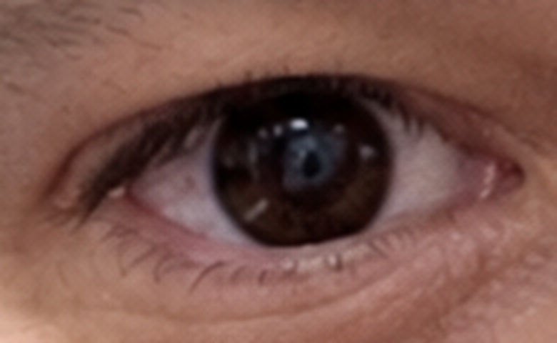
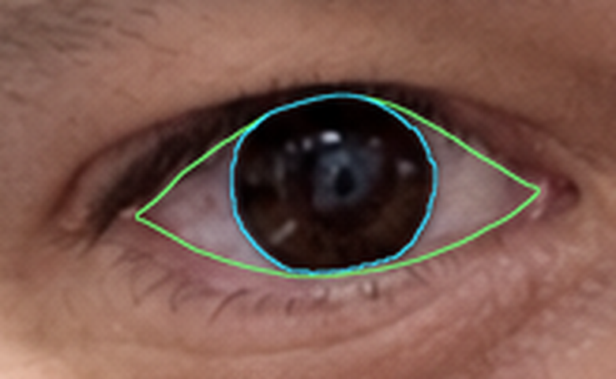
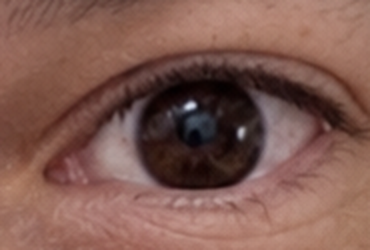
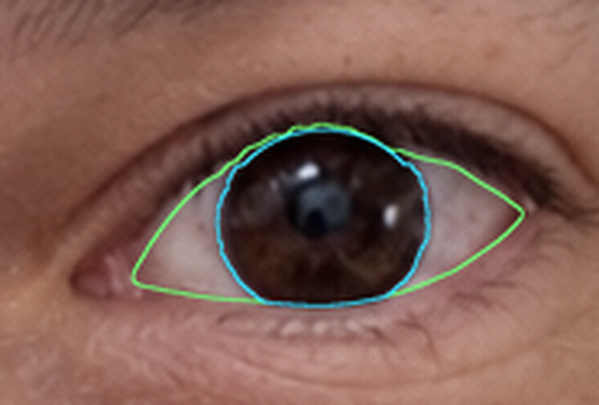
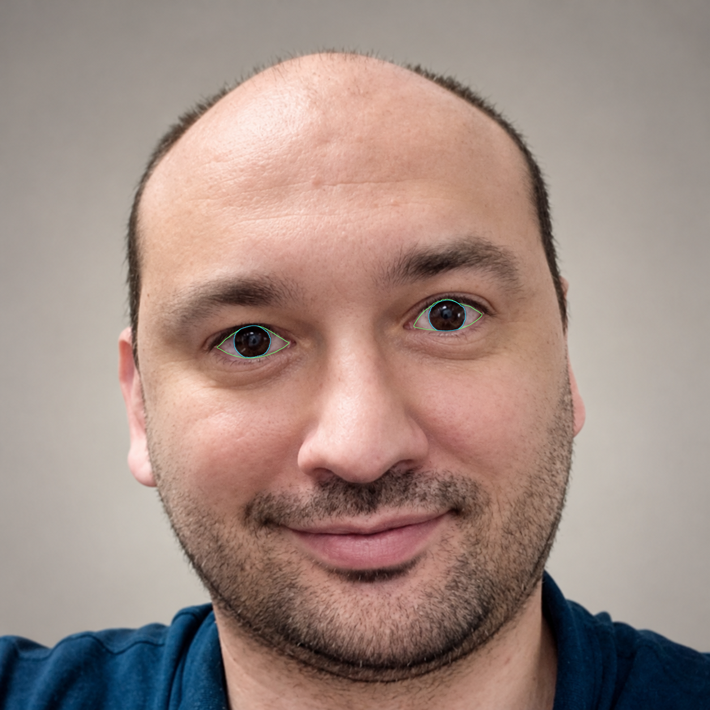

Eye contours before glow - revision 2
The previous outlines were too approximate. This revision uses denser lid tracing and image-gradient refinement along the iris edges, with the iris mask clipped by the actual lid mask. No glow or face edits have been applied. These remain review outlines, not a claim of pixel-perfect segmentation.
Green: visible eyeball inside the eyelids · Cyan: visible iris boundary. The eyeball mask excludes the pink inner corners and eyelid tissue; the iris mask is clipped to the eyeball mask.
Left side of photograph - enlarged


Right side of photograph - enlarged


Full portrait


Eyeball mask · Iris mask · Previous glow previews